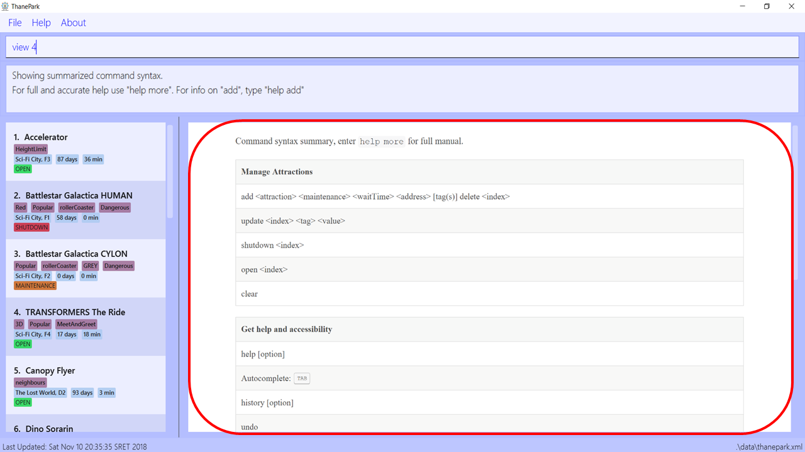
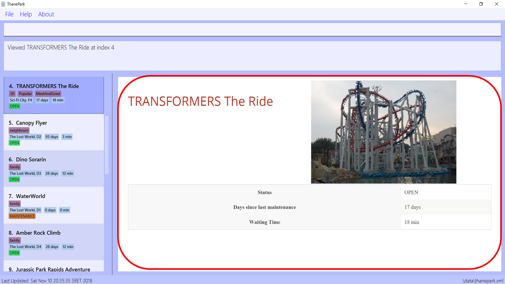
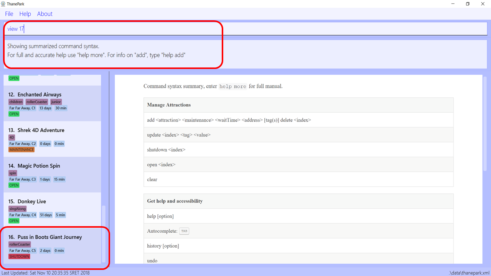
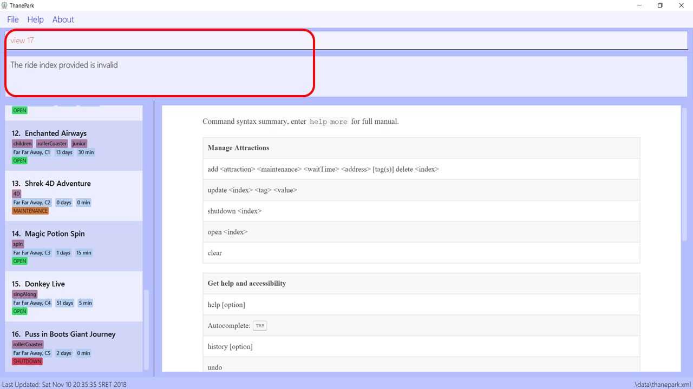
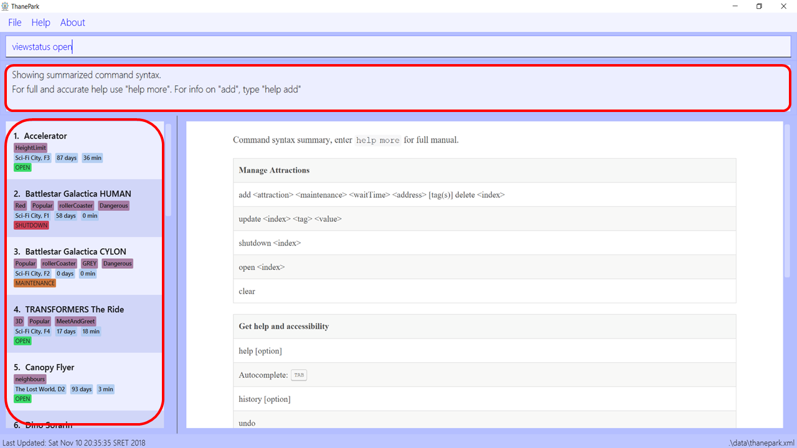
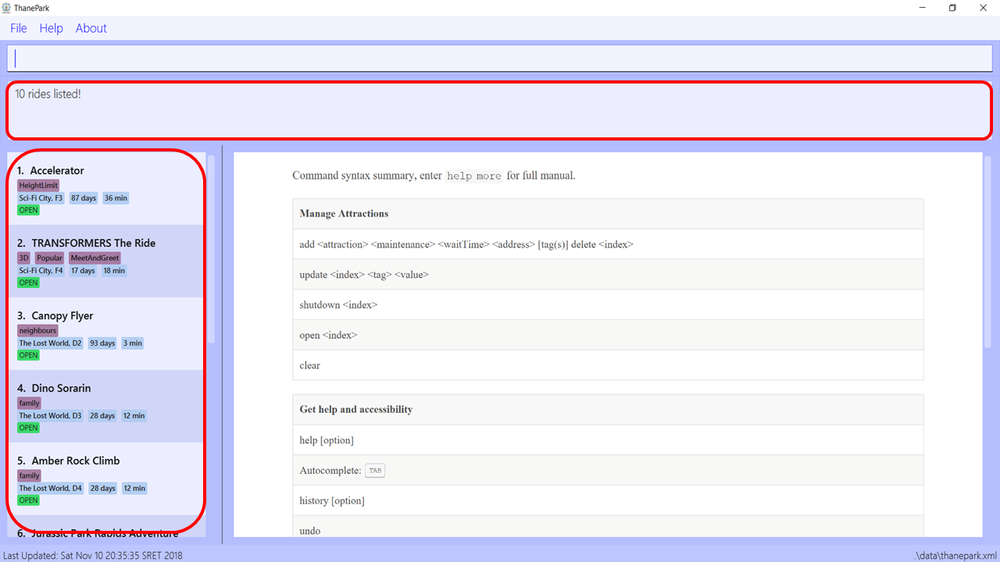
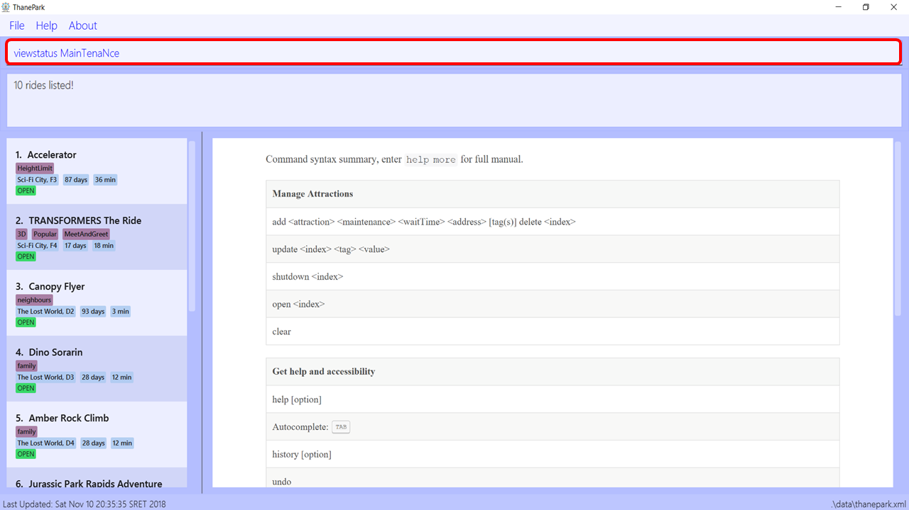
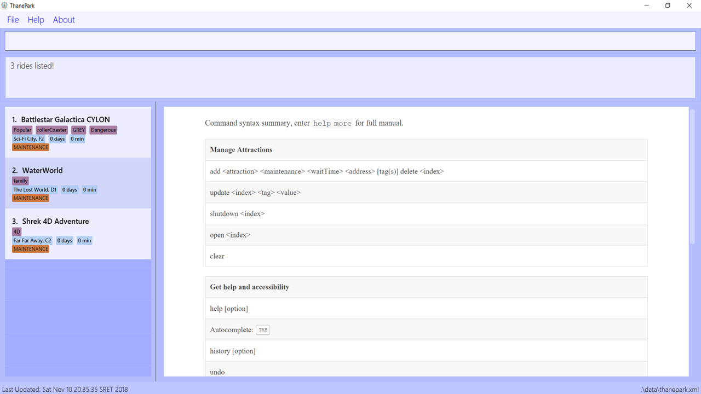

PROJECT: ThanePark
1. Overview
This portfolio serves to document my contributions to ThanePark. ThanePark is a desktop application used for theme park operators to manage their rides. It was managed and developed by a team of four members who spent three months on this project. This project is part of a software engineering module, CS2103T, offered by the School of Computing, National University of Singapore.
A limitation set by the module is that the user has to interact with ThanePark using a Command Line Interface(CLI). It also has a Graphical User Interface(GUI) created with JavaFX. ThanePark is written in Java, and has about 12,000 lines of code.
My role in ThanePark is to implement the viewstatus feature and to update documents.
2. Summary of Contributions
-
Major enhancement: The addition of the
viewstatusfeature.-
What it does: This feature allows the user to obtain a list of rides filtered by the statuses of the rides.
-
Justification: This feature allows the user to find the relevant rides with ease.
-
Highlight: This feature introduces a new predicate class,
RideStatusPredicate, to allow users to input a fixed set of statuses to compare values with the existing data. -
Credits: This feature is based on the way find feature works, with a
RideStatusPredicateinstead of aRideContainsKeywordsPredicate.
-
-
Minor enhancement: The addition of the
maintainfeature, which allows the user to update the status of a selected ride toMAINTENANCE. Also, the feature resets the maintenance and waiting time field to zero. -
Code contributed: [Functional and test code]
-
Other contributions:
-
Documentation:
-
Updated the section 4.3 of the User Guide on view information of rides [Pull Request #154]
-
Updated the section 5.4 of the Developer Guide on view status feature [Pull Request #101]
-
-
Community: Reported bugs for other teams in the class [T09-1 Issue #144]
-
3. Contributions to the User Guide
Given below are sections I contributed to the User Guide. They showcase my ability to write documentation targeting end-users. |
3.1. View information of rides
This section contains all commands related to both viewing information of specific rides and viewing different lists of rides.
3.1.1. Viewing detailed information of a specific ride: view
Displays all available information about a single ride on the list of displayed rides.
The index field specifies the index of the ride that you want to view.
Format: view <index>
index should be a positive integer that is not larger than the size of the displayed list.
|
Example 1: Note how the information within the red box changes when

Figure 1. Before executing
view 4

Figure 2. After executing
view 4When Example 2: Note how the information within the red box at the top changes when

Figure 3. Before executing
view 17The red box at the bottom of the diagram above shows the last ride, with an index of 16. If you want to view a ride with an index larger than the list, an error message will be shown.

Figure 4. After executing
view 17The red box in the diagram above shows the error message when you try to enter an index that is not in the list, |
3.1.2. Viewing rides by their status: viewstatus
Displays all rides according to the status of the rides.
Format: viewstatus <status>
| There are only three statuses that are valid, namely open, shutdown and maintenance. |
Example 1: Note how the information within the red boxes changes when the

Figure 5. Before executing
viewstatus openIn the diagram above, note that the list of rides in the red box at the left contains rides with different statuses.

Figure 6. After executing
viewstatus openAs seen in the diagram above, once Example 2:

Figure 7. Before executing
viewstatus MainTenaNce command

Figure 8. After executing
viewstatus MainTenaNce commandAs seen in the diagram above, ThanePark is able to read |
4. Contributions to the Developer Guide
Given below are sections I contributed to the Developer Guide. They showcase my ability to write technical documentation and the technical depth of my contributions to the project. |
4.1. View Status Feature
This section documents how viewstatus is being implemented.
4.1.1. Current Implementation
The view status feature is implemented with the help of ViewStatusCommand and RideStatusPredicate classes.
As seen in the sequence diagram below, when the ThaneParkParser class parses the user input of viewstatus,
it calls a new ViewStatusCommandParser to parse the arguments from the user input.
ViewStatusCommandParserAs seen in the diagram above, the ViewStatusCommandParser class checks the arguments for keywords relating to the status of the rides.
If there are more than one strings found or the argument string is not one of the three statuses,
it will throw a ParseException, letting the user know that the command format is wrong.
Conversely, it will compare the argument with the statuses and create a Status enumeration.
A new RideStatusPredicate is instantiated with the Status enumeration.
The ViewStatusCommandParser will return a new ViewStatusCommand containing RideStatusPredicate.
The LogicManager execute the command, and uses the RideStatusPredicate to filter the list of rides for rides that fulfill the required predicate(s).
A list of filtered rides would be returned.
4.1.2. Design Considerations
Aspect: Data structure to support view status command
-
Alternative 1(Current choice): Handle checking of status by passing the
Statusenumeration toRideStatusPredicateto test.-
Pros: Code is more cohesive as each class is more focused.
-
Cons: More classes are required to implement the check.
-
-
Alternative 2: Handle checking of status in ViewStatusCommand by using a lambda expression to express the predicate.
-
Pros: Easier to implement as less classes are needed.
-
Cons: Reduced modularity as predicate logic is not abstracted.
-